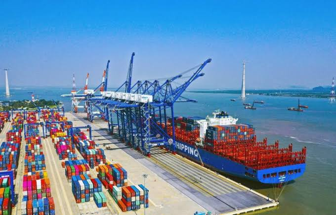
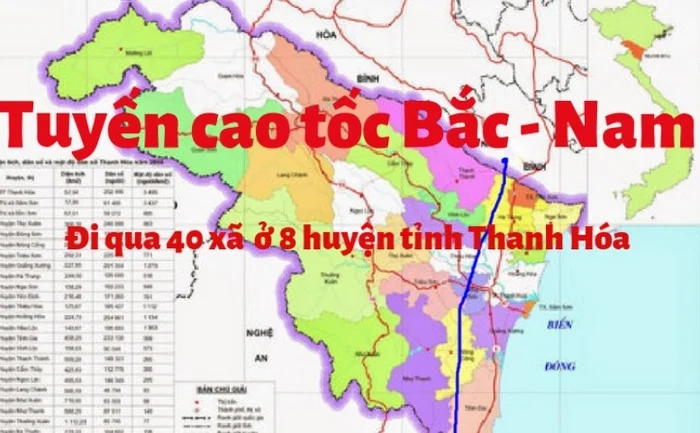
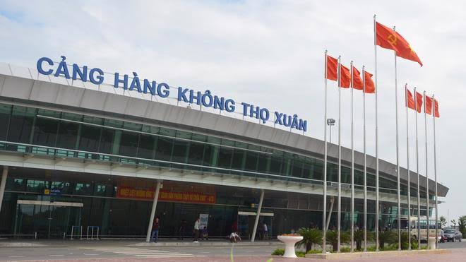

KINH TẾ VÀ HẠ TẦNG
Việc duy trì vị trí thứ 8 về quy mô GRDP toàn quốc là chi tiết rõ nét phản ánh sức mạnh nội tại và tốc độ tái cơ cấu kinh tế ấn tượng của tỉnh Thanh Hóa trong thời gian qua. Đóng vai trò là một trong những cực tăng trưởng quan trọng nhất của khu vực Bắc Trung Bộ, tỉnh đã và đang tối ưu hóa các lợi thế so sánh để bứt phá. Trong cấu trúc phát triển đó, Khu kinh tế Nghi Sơn giữ vị trí trung tâm chỉ huy công nghiệp và dịch vụ hàng hải, hoạt động như một đòn bẩy chiến lược nhằm gia tăng năng lực cạnh tranh quốc gia. Bằng việc kiến tạo một hệ sinh thái hạ tầng kỹ thuật đồng bộ, hiện đại cùng khung thể chế ưu đãi vượt trội, Nghi Sơn đã tạo ra sức hút mạnh mẽ đối với dòng vốn đầu tư trong nước cũng như dòng vốn FDI chất lượng cao, trở thành động lực lan tỏa phát triển cho toàn bộ vùng phụ cận.
Cảng biển Nghi Sơn
Trở lại thời điểm trước những năm 1990, vùng đất duyên hải phía Nam tỉnh Thanh Hóa - nay thuộc địa giới hành chính xã Nghi Sơn, nơi đây vẫn mang diện mạo của một vùng biển nghèo, đời sống người dân chủ yếu phụ thuộc vào nghề cá truyền thống. Dù vậy, dưới góc nhìn kinh tế hàng hải, Nghi Sơn sở hữu giá trị tự nhiên vô cùng đắt giá: sự hiện diện của đảo Hòn Biện đóng vai trò như bức tường thành thiên nhiên chắn gió, hình thành nên vùng vịnh lặng sóng. Nhận diện rõ tiềm năng khác biệt đó, các chính sách quy hoạch đã chính thức gọi tên Nghi Sơn, mở ra bước ngoặt lịch sử trong việc đặt nền móng xây dựng cảng biển.

Đặt nền móng vững chắc (1997): Cảng Nghi Sơn chính thức được quy hoạch thành lập theo quyết định của Thủ tướng Chính phủ. Sự ra đời của cảng đánh dấu bước khởi đầu chiến lược nhằm phục vụ trực tiếp cho Nhà máy Xi măng Nghi Sơn, tạo tiền đề vững chắc cho việc phát triển hạ tầng hàng hải chuyên nghiệp tại vùng kinh tế trọng điểm. Mở rộng quy mô & Tái định vị chiến lược (2000 - 2006): Đi cùng việc đưa vào vận hành các bến số 1, số 2 và sự hình thành của Khu kinh tế Nghi Sơn (2006), cảng đã vươn mình mạnh mẽ từ một cảng chuyên dụng thành hệ thống cảng biển tổng hợp đa ngành. Sự chuyển dịch này mở ra không gian giao thương quốc tế rộng lớn, đáp ứng trọn vẹn nhu cầu xuất nhập khẩu ngày càng gia tăng của Quý khách hàng. Bứt phá & Hiện đại hóa toàn diện (2013 - Nay): Đồng hành cùng Siêu dự án Khu liên hợp Lọc hóa dầu Nghi Sơn, hạ tầng cảng được đầu tư nâng cấp chuyên sâu với hệ thống bến hàng lỏng chuyên dụng và phao nổi xuất nhập dầu thô (SPM) hiện đại ngoài khơi. Chúng tôi không ngừng tối ưu năng lực tiếp nhận tàu tải trọng lớn, đảm bảo chuỗi cung ứng an toàn, thông suốt và hiệu quả nhất cho các đối tác trong và ngoài nước.
Quy mô mặt đất & Vùng nước chuẩn quốc tế: Quy hoạch chi tiết trên diện tích hàng nghìn héc-ta với hệ thống luồng hàng hải và vũng quay tàu đạt độ rộng, độ sâu lý tưởng. Hạ tầng vùng nước hiện đại đảm bảo các siêu tàu trọng tải lớn di chuyển, quay đầu và neo đậu hoàn toàn thuận lợi, an toàn tuyệt đối. >Hạ tầng cầu bến đa năng & Định hướng nâng cấp IA: Với hơn 5,3 km chiều dài cầu bến hiện hữu và định hướng phát triển dài hạn lên đến 62 bến cảng (bao gồm cảng tổng hợp, cảng container và bến chuyên dùng), chúng tôi không ngừng nâng cấp toàn diện các tiêu chí kỹ thuật để sớm được công nhận là Cảng biển đặc biệt (Loại IA) của quốc gia, đáp ứng trọn vẹn mọi nhu cầu xếp dỡ khắt khe nhất của Quý khách. Hệ thống phao nổi SPM tiếp nhận siêu tàu 320.000 DWT: Điểm nhấn kỹ thuật hàng hải đỉnh cao là hệ thống phao neo đơn ngoài khơi cách bờ 35 km (Single Point Mooring - SPM). Hạ tầng tiên tiến này cho phép tiếp nhận an toàn các siêu tàu chở dầu thô (VLCC) có trọng tải cực lớn lên đến 320.000 DWT, đảm bảo nguồn nguyên liệu vận hành ổn định cho Khu liên hợp Lọc hóa dầu Nghi Sơn. Năng lực thông qua vượt trội & Kết nối toàn cầu: Với sản lượng hàng hóa xử lý thực tế đạt trên 56 triệu tấn/năm, Nghi Sơn khẳng định vị thế cửa ngõ logistics then chốt của vùng Bắc Trung Bộ. Sự hợp tác chiến lược cùng các hãng tàu container hàng đầu thế giới (như CMA-CGM) mang đến cho Quý khách hàng mạng lưới kết nối trực tiếp, thông suốt tới các thị trường quốc tế lớn.
Đầu mối logistics tối ưu vùng Bắc Trung Bộ: Nghi Sơn nằm ở vị trí chiến lược, đóng vai trò là cửa ngõ giao thương đường biển thuận tiện nhất cho Bắc Trung Bộ, Tây Nguyên và các vùng kinh tế trọng điểm lân cận. Lựa chọn Nghi Sơn giúp Quý doanh nghiệp rút ngắn đáng kể hành trình vận chuyển, tối ưu hóa thời gian và chi phí logistics trong chuỗi cung ứng. Cửa ngõ hành lang kinh tế Đông - Tây kết nối vươn tầm: Với lợi thế địa lý độc tôn, Cảng Nghi Sơn là điểm luân chuyển hàng hóa liên quốc gia quan trọng, mở ra hướng ra biển trực tiếp cho khu vực Nam Lào và Đông Bắc Thái Lan. Đây là cơ hội vàng giúp Quý đối tác mở rộng thị trường kinh doanh và giao thương quốc tế một cách thông suốt, hiệu quả. Đòn bẩy thu hút đầu tư & Mạng lưới thương mại toàn cầu: Với sản lượng thông qua ấn tượng vượt mốc 56 triệu tấn/năm, Nghi Sơn không chỉ là hạ tầng trọng điểm mà còn là tâm điểm thu hút dòng vốn FDI mạnh mẽ. Sự hợp tác chiến lược cùng các hãng tàu container danh tiếng toàn cầu (như CMA-CGM) bảo chứng cho năng lực vận hành đạt chuẩn quốc tế, đưa hàng hóa của Quý khách tiếp cận trực tiếp và sâu rộng vào mạng lưới thương mại toàn cầu.

LIÊN HỢP LỌC HÓA DẦU NGHI SƠN (NSRP)
Sự chuyển mình mạnh mẽ và đà tăng trưởng kinh tế bền vững của tỉnh Thanh Hóa không chỉ dựa vào những ưu thế vượt trội từ hạ tầng logistics và giao thương hàng hải của hệ thống cảng biển, mà còn ghi nhận đóng góp hạt nhân đặc biệt quan trọng từ Khu liên hợp Lọc hóa dầu Nghi Sơn - một trong những dự án trọng điểm quốc gia, đóng vai trò đòn bẩy chiến lược cho sự phát triển công nghiệp của toàn vùng.

Hợp tác chiến lược quốc tế - Nền móng nguồn lực vững chắc (2008): Sự hình thành liên doanh quốc tế giữa các tập đoàn hàng đầu đến từ Việt Nam, Nhật Bản và Kuwait đã kiến tạo nền tảng toàn diện về tài chính, công nghệ tiên tiến và nguồn nguyên liệu thô dồi dào. Cột mốc bước ngoặt này không chỉ góp phần quan trọng đảm bảo an ninh năng lượng quốc gia, giảm phụ thuộc vào nguồn xăng dầu nhập khẩu, mà còn thiết lập chuẩn mực cung ứng năng lượng uy tín, ổn định cho thị trường và Quý đối tác. Khởi công Siêu dự án kỷ lục - Sức hút đầu tư vượt trội (10/2013): Dự án chính thức khởi công xây dựng với tổng vốn đầu tư kỷ lục 9 tỷ USD - trở thành dự án FDI lớn nhất Việt Nam tại thời điểm triển khai. Quy mô kỷ lục này khẳng định vị thế hạ tầng công nghiệp hàng đầu và tiềm lực thực thi mạnh mẽ, đặt nền móng cho chuỗi giá trị năng lượng và phụ trợ hiện đại phục vụ Quý khách hàng. Vận hành thương mại & Khẳng định hiệu suất đỉnh cao (2018 – Nay): Năm 2018 đánh dấu bước tiến quan trọng khi nhà máy tiếp nhận chuyến tàu dầu thô đầu tiên từ Kuwait (tháng 2), chính thức xuất xưởng dòng sản phẩm thương mại (tháng 5) và đi vào vận hành toàn diện (tháng 11). Nhờ áp dụng quy trình kiểm soát chất lượng khắt khe và các đợt bảo dưỡng tổng thể theo tiêu chuẩn quốc tế, nhà máy luôn duy trì trạng thái vận hành an toàn, ổn định và đạt tối đa công suất thiết kế, đảm bảo nguồn cung liên tục, đáng tin cậy cho Quý doanh nghiệp.
Sở hữu quy hoạch 1.300 ha cùng tổng vốn đầu tư 9 tỷ USD, Khu liên hợp Lọc hóa dầu Nghi Sơn kết hợp tối ưu giữa 400 ha hạ tầng chế biến trên đất liền và 900 ha vùng nước chuyên dụng cho cảng xuất hàng, đường ống dẫn ngầm. Mô hình liên danh quốc tế uy tín giữa Idemitsu Kosan (35,1%), Kuwait Petroleum (35,1%), Petrovietnam (25,1%) và Mitsui Chemicals (4,7%) chính là bảo chứng toàn diện cho năng lực tài chính, công nghệ hiện đại cùng nguồn cung dầu thô dồi dào. Nguồn lực chiến lược này giúp nhà máy luôn duy trì trạng thái vận hành an toàn, ổn định và đạt tối đa công suất thiết kế. Chúng tôi cam kết mang đến cho Quý đối tác và thị trường nguồn cung năng lượng chất lượng cao, liên tục, góp phần tối ưu hóa hiệu quả vận hành và chuỗi cung ứng cho Quý doanh nghiệp.

Khu liên hợp ứng dụng dây chuyền công nghệ hiện đại bậc nhất, tối ưu hóa xử lý 100% dầu thô chua từ Kuwait với công suất 200.000 thùng/ngày (khoảng 10 triệu tấn/năm). Quy trình vận hành tiên tiến không chỉ bảo đảm an ninh năng lượng quốc gia mà còn duy trì nguồn cung ổn định, đáp ứng trọn vẹn mọi tiêu chuẩn kỹ thuật khắt khe của Quý khách hàng. Nhà máy cung ứng đa dạng các dòng nhiên liệu đạt chuẩn Euro IV/V (xăng RON 92/95, Diesel, Jet A-1, LPG) cùng các sản phẩm hóa dầu cao cấp như Polypropylene, Benzene, Paraxylene và Lưu huỳnh. Đây là giải pháp nguyên liệu chất lượng cao, giúp Quý doanh nghiệp tối ưu hóa chi phí sản xuất và nâng cao lợi thế cạnh tranh trên thị trường.
Cùng với Nhà máy Lọc dầu Bình Sơn, Nghi Sơn đáp ứng 35% - 40% nhu cầu xăng dầu toàn quốc, đóng vai trò lá chắn chiến lược giúp ổn định thị trường trước biến động địa chính trị toàn cầu. Nguồn cung nội địa dồi dào và liên tục này mang lại sự an tâm tuyệt đối cho Quý đối tác, đảm bảo chuỗi cung ứng năng lượng luôn thông suốt và an toàn. Là dự án đóng góp ngân sách lớn nhất tỉnh Thanh Hóa, Nghi Sơn là hạt nhân thu hút đầu tư vào các ngành phụ trợ như chế biến nhựa, hóa chất và logistics công nghiệp. Sự thành công của liên danh Việt Nam - Nhật Bản - Kuwait không chỉ khẳng định uy tín quốc tế mà còn tạo đòn bẩy vững chắc, mở ra nhiều cơ hội hợp tác và phát triển bền vững cùng Quý doanh nghiệp.
TUYẾN ĐƯỜNG BỘ CAO TỐC BẮC - NAM (ĐOẠN QUA THANH HÓA)
Tuyến cao tốc Bắc - Nam phía Đông đoạn qua địa phận tỉnh Thanh Hóa đóng vai trò là mắt xích hạ tầng giao thông đường bộ mang tính bước ngoặt, không chỉ phá vỡ thế độc đạo và giảm tải hiệu quả cho Quốc lộ 1A, mà còn rút ngắn đáng kể thời gian kết nối giữa Thanh Hóa với Thủ đô Hà Nội và các tỉnh vùng kinh tế trọng điểm phía Bắc.

Sau giai đoạn chuẩn bị và giải phóng mặt bằng quy mô lớn (trước 2020), toàn tuyến cao tốc qua Thanh Hóa - bao gồm các phân đoạn trọng điểm Mai Sơn - QL45, QL45 - Nghi Sơn và Nghi Sơn - Diễn Châu - đã chính thức thông xe và đi vào vận hành từ tháng 9/2023. Sự hoàn thiện hạ tầng này tạo nên tuyến giao thông huyết mạch kết nối xuyên suốt từ Hà Nội đến Nghệ An. Hệ thống cao tốc hiện đại giúp rút ngắn 50% thời gian di chuyển, mang lại cho Quý khách hàng và đối tác sự thuận tiện, an toàn vượt trội. Đây là đòn bẩy chiến lược giúp Quý doanh nghiệp tối ưu hóa chi phí logistics, nâng cao hiệu quả giao thương và dễ dàng kết nối tới các vùng kinh tế trọng điểm.
Tuyến cao tốc qua Thanh Hóa có tổng chiều dài gần 99 km, kết nối trực tiếp các địa bàn trọng điểm qua hệ thống nút giao liên thông hiện đại. Trong giai đoạn hiện tại, tuyến đường vận hành với quy mô 4 làn xe, tốc độ tối đa 90 km/h, mang lại cho Quý vị trải nghiệm di chuyển êm thuận, an toàn và tiết kiệm tối đa thời gian hành trình. Theo quy hoạch mạng lưới giao thông đường bộ quốc gia, tuyến đường đã sẵn sàng các phương án mở rộng hoàn chỉnh lên 6 làn xe trong giai đoạn tiếp theo. Nâng cấp chiến lược này tiếp tục gia tăng năng lực thông hành, đảm bảo luồng giao thương của Quý khách hàng và doanh nghiệp luôn thông suốt, linh hoạt ngay cả trong các thời điểm mật độ lưu thông cao.
Tuyến cao tốc giúp rút ngắn thời gian di chuyển từ Hà Nội về Khu kinh tế Nghi Sơn chỉ còn 2 - 2,5 giờ. Sự tối ưu khoảng cách này tạo điều kiện thuận lợi tuyệt đối cho Quý đối tác trong việc đi lại, thu hút đội ngũ nhân lực chất lượng cao và thúc đẩy nhanh chóng quá trình di chuyển của dòng vốn đầu tư. Sự kết nối trực tiếp giữa trục đường bộ huyết mạch và hạ tầng hàng hải Cảng nước sâu Nghi Sơn hoàn thiện mô hình logistics đa phương thức vượt trội. Hệ thống liên hoàn này hỗ trợ Quý doanh nghiệp vận chuyển hàng hóa xuất nhập khẩu an toàn, thông suốt, giúp giảm thiểu rủi ro đứt gãy và tối ưu hóa tối đa chi phí vận tải trong chuỗi cung ứng.
CẢNG HÀNG KHÔNG QUỐC TẾ THỌ XUÂN
Mang trọng trách căn cứ quân sự Sao Vàng từ năm 1965 với vị trí chiến lược đặc biệt trong hệ thống phòng không quốc gia, công trình này đã trải qua quá trình chuyển dịch mô hình mang tính bước ngoặt, từ một sân bay thuần túy quốc phòng trở thành cảng hàng không lưỡng dụng, đóng vai trò hạ tầng động lực phục vụ phát triển kinh tế - xã hội của địa phương và khu vực.

Chính thức đón chuyến bay thương mại đầu tiên kết nối Thanh Hóa - TP. Hồ Chí Minh từ năm 2013 dưới mô hình lưỡng dụng, Cảng hàng không Thọ Xuân đã được quy hoạch thành Cảng hàng không quốc tế từ năm 2020. Sự chuyển mình chiến lược này đặt nền móng kết nối trực tiếp khu vực Bắc Trung Bộ với các trung tâm kinh tế, thương mại lớn trong châu lục. Được đầu tư đồng bộ hệ thống giao thông kết nối trị giá hơn 3.300 tỷ đồng nối thẳng đến trung tâm đô thị và Khu kinh tế Nghi Sơn, sân bay mang lại cho Quý khách sự thuận tiện tối đa trong di chuyển. Quá trình nâng cấp toàn diện giúp gia tăng năng lực tiếp đón, đảm bảo mọi hành trình giao thương, du lịch và hợp tác đầu tư của Quý vị luôn thông suốt, an toàn và hiệu quả.
Đạt chuẩn cấp 4E theo tiêu chuẩn ICAO, Cảng hàng không Thọ Xuân sở hữu đường cất hạ cánh và sân đỗ hiện đại, sẵn sàng tiếp nhận an toàn các dòng tàu bay thân rộng tầm xa như Boeing 787-9 hay Airbus A350-900. Với công suất tiếp đón 2,5 - 5 triệu hành khách/năm cùng khả năng xử lý 25.000 tấn hàng hóa/năm, hạ tầng cảng đáp ứng trọn vẹn mọi nhu cầu di chuyển và vận tải hàng hóa hàng không của Quý doanh nghiệp. Tầm nhìn đến năm 2050, dự án quy hoạch mở rộng khu hàng không dân dụng mới sẽ nâng tổng công suất toàn cảng lên mức 20 triệu hành khách/năm. Định hướng phát triển quy mô này bảo chứng cho năng lực kết nối dài hạn, mang đến cho Quý đối tác cơ hội mở rộng mạng lưới thương mại, logistics và hành trình di chuyển quốc tế ngày càng linh hoạt, thông suốt.
Cảng hàng không Thọ Xuân đóng vai trò là cầu hàng không chiến lược, rút ngắn tối đa khoảng cách địa lý và kết nối Thanh Hóa với thế giới. Hạ tầng hàng không hiện đại này tạo điều kiện tối ưu phục vụ hàng triệu lượt du khách, đồng thời mang lại sự di chuyển thuận tiện, nhanh chóng cho lực lượng chuyên gia quốc tế và các nhà đầu tư đến làm việc tại các siêu dự án trên địa bàn. Đóng vai trò hạt nhân trong mô hình Đô thị sân bay (Aerotropolis) Lam Sơn - Sao Vàng, cảng hàng không thúc đẩy sự phát triển của các trung tâm logistics, dịch vụ chuyển phát nhanh và công nghệ cao. Đây là động lực quan trọng giúp Quý doanh nghiệp tối ưu hóa chuỗi dịch vụ, gia tăng hiệu quả giao thương và mở ra nhiều cơ hội đầu tư bền vững tại khu vực Bắc Trung Bộ.